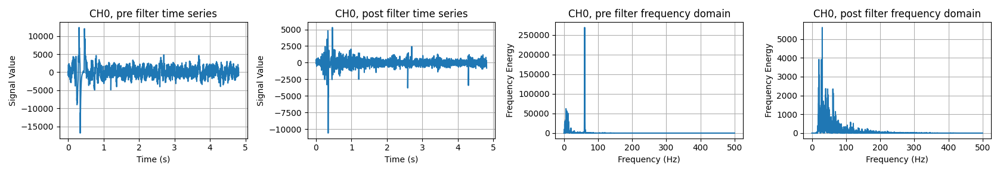

The EMG signal is inherently noisy, meaning it must be filtered before it is passed through the machine learning pipeline. This is because a noisy signal leads to worse classifier performance, and in turn, system performance and online usability. The filtering module, which is built on top of the scipy package, alleviates these challenges by providing developers with a simple tool for removing common sources of noise, such as:
Powerline Interference: 50/60 Hz noise, caused by proximity to wired electronic devices.
Motion Artifact: <20 Hz noise, caused by the movement of the limb and, correspondingly, measurement equipment, changing the contact characteristics between the electrodes and the skin.
Note that many hardware devices (such as the Myo and Delsys) have the option for built-in filtering.
By creating a dictionary with the filter parameters including:
name: The name of the filter.
cutoff: The cutoff frequency.
order/bandwidth: How much energy is removed from the signal, or the width of the filter.
# create a notch filter for removing power line interference
filter_dictionary={ "name": "notch", "cutoff": 60, "bandwidth": 3}
# create a filter for removing high frequency noise and low frequency motion artefacts
filter_dictionary={ "name":"bandpass", "cutoff": [20, 450], "order": 4}
# create a filter for low frequency motion artefacts
filter_dictionary={ "name": "highpass", "cutoff": 20, "order":2}
These filters can be applied on the Offline or Online Data Handler.
Filtering Offline Data
It is often desirable to filter offline data to clean them up or for better recognition performance. The filtering module can be used directly on the OfflineDataHandler or a list of EMG data through the .filter() function. After installing the filters on the Filter class, simply just pass in the data and the filtering will be applied.
dataset = libemg.datasets._3DCDataset()
odh = dataset.prepare_data(subjects_values=["1"])
# instantiate the filter object with the sampling frequency
fi = libemg.filtering.Filter(1000)
# install filters to the filter object
fi.install_common_filters()
# run the entire first subject dataset through the common filters
odh = fi.filter(odh)

Figure 1: A plot of the frequency domain before and after removing the 60 Hz powerline interference from a recording of data.
Filtering Online Data
Filters can be installed on the OnlineDataHandler, before starting the process to filter real-time (i.e., live) data. These filters are then passed through the rest of the pipeline, for example, to the Training UI or the OnlineEMGClassifier.
from libemg.streamers import delsys_streamer
from libemg.offline_metrics import OfflineMetrics
if __name__ == "__main__" :
fi = Filter(sampling_frequency=2000)
fi.install_common_filters()
streamer = delsys_streamer()
# Create the Online Data Handler
odh = OnlineDataHandler(max_buffer=2000)
# Install the Filters (This needs to be done before starting the process)
odh.install_filter(fi)
odh.start_listening()
odh.visualize()